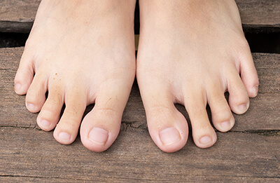
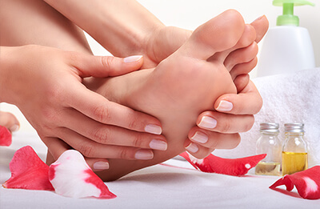

Esto es publicidad
Cómo eliminar eficazmente la infección fúngica en los pies: un método sencillo que realmente es eficaz
¡Hola a todos, de nuevo yo! Quiero compartir con vosotros mi felicidad, por fin me he librado de la terrible enfermedad que padecía. Todavía recuerdo todo lo que tuve que probar antes de encontrar este método fantástico.
Hace aproximadamente un año, escribí un post en el que os contaba que mi vida se había convertido en una pesadilla. Tengo 37 años, soy guapa y tengo muchos admiradores. Pero cuando me acerco a un hombre, normalmente tiende a huir lo más rápido que puede. ¿A qué se debe esto? El problema son mis hongos en los pies. Al principio lo ocultaba con calcetines gruesos, pero entonces empezó a aparecer un olor terrible. Además, el picor y la descamación de la piel eran cada vez peores. Era insoportable.
Durante el último año, he probado todos los métodos posibles. He perdido la cuenta de todas las pastillas y medicamentos que tomé pero, en el mejor de los casos, tuvieron un efecto temporal, en el peor, no funcionaron en absoluto. Lo más triste es que los doctores no sabían cómo ayudarme y me sugerían que probase pastillas muy caras, todas ellas con muchos efectos secundarios. No me quedó más remedio que vender el coche y comprar un tratamiento completo de antifúngicos alemanes. Durante el segundo mes de tratamiento, empecé a tener dolores insoportables en el hígado. Asi que decidi seguir siendo poco atractiva, pero al menos vivir.
Esto es lo que me salvó de la infección por hongos: un producto barato
He encontrado la solución de forma inesperada. Una vieja amiga me habló de una podóloga titulada que me ayudaría a librarme de esta cosa horrible. Normalmente no acepta clientes con hongos en las uñas, pero conseguí convencerla comprándole nuevas herramientas que podría utilizar conmigo. Después de examinarme las uñas, me dijo que probara la solución antifúngica . Me dijo que en una semana mi problema desaparecería y que para entonces debería pedir cita. También me sugirió que comprara este producto sólo en el sitio web oficial del distribuidor , para que no corriera el riesgo de encontrarme con un producto falsificado que sólo me perjudicaría.
Sinceramente, al principio no la creí. Me parecía una broma y tenía miedo de decepcionarme de nuevo. Pero entonces leí muchas opiniones positivas sobre este producto y decidí probar . Además, no es muy caro, así que no tenía nada que perder.
El paquete llegó rápidamente. Inmediatamente lo abrí y empecé a leer las instrucciones. Así es como funciona el producto:
- Destruye el hongo en poco tiempo, al tiempo que repara la piel y la superficie de la uña dañadas.
- Alivia la irritación y el enrojecimiento. Calma la piel y la nutre con vitaminas y minerales.
- Tiene un fuerte efecto preventivo. Evita la reaparición de la infección.
- Elimina instantáneamente la sudoración excesiva y el mal olor combatiendo la causa del problema.
- Reduce la hinchazón y normaliza la circulación sanguínea.
- Restaura la elasticidad de la piel y le da un aspecto sano.
- Ralentiza el proceso de descamación de la piel gracias a sus antioxidantes naturales.
La infección fúngica desaparece para siempre: los resultados son visibles al cabo de una semana.
Empecé a usar lo siguiendo las instrucciones del sitio web del distribuidor. . Me lo aplicaba dos veces al día: por la mañana antes de ir a trabajar y por la noche antes de acostarme. Para ser sincera, no esperaba grandes resultados. Pero ya me sorprendió la noche del primer día. Por primera vez en mucho tiempo, después de quitarme los zapatos no sentía ese olor horrible. Mis calcetines estaban secos, el enrojecimiento había disminuido mucho: ¡ había hecho maravillas!
Después de unas semanas de usar , pude deshacerme por completo del enrojecimiento y la piel escamosa. Todas las zonas dañadas se curaron más rápido de lo que esperaba. Y, lo más importante, mi placa ungueal dañada empezó a regenerarse. Tras poco más de un mes de uso, no quedaba ni rastro de la infección contra la que había estado luchando durante años. El mal aspecto, el olor horrible y el enrojecimiento habían desaparecido. La piel de mis pies se regeneró por completo y quedó suave, lisa e hidratada.

Además, me sorprendió mucho que este producto antifúngico, sólo contiene ingredientes naturales y potentes antioxidantes que ayudan a rejuvenecer la piel y evitan que envejezca. Si lo utilizas con fines preventivos, el riesgo de contraer una infección fúngica se reduce prácticamente a cero.
Por fin me siento bien. Ya no tengo que preocuparme, mi vida privada ha mejorado considerablemente porque no tengo nada que ocultar.
Sólo una cosa: pide este producto sólo en el sitio web oficial del distribuidor, . En la red encontrarás miles de productos falsos. Si utilizas el enlace que te ofrecemos, puedes estar seguro de que no empeorarás tu estado ni malgastarás dinero.
Muchas gracias por vuestra atención, mis queridos lectores. Espero que mi historia os ayude a evitar cometer los mismos errores que yo. ¿Quién iba a pensar que tardaría un año en encontrar una solución a mi problema y que, después, me libraría de la infección en una semana y media? También se lo recomendé a mi madre, para que se deshiciera de la infección que la atormentaba desde hacía años. Tardó dos meses. Las infecciones más graves suelen tardar un poco más en curarse.